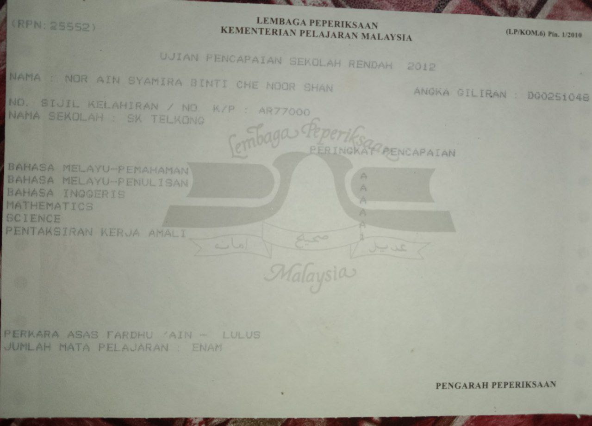
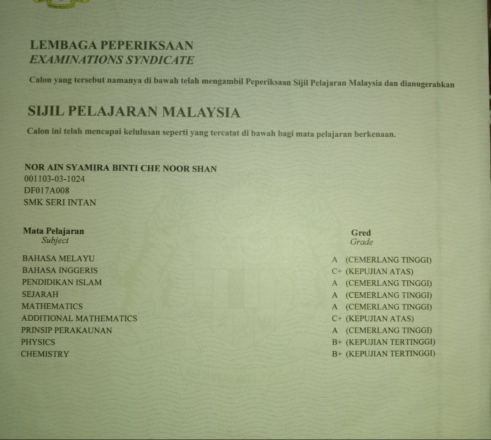
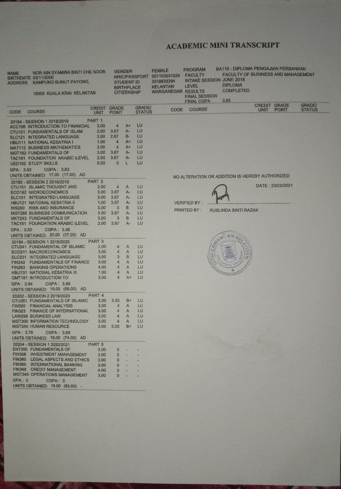
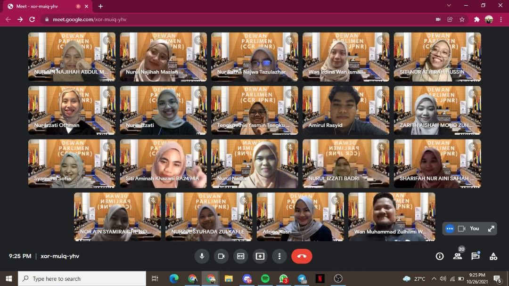
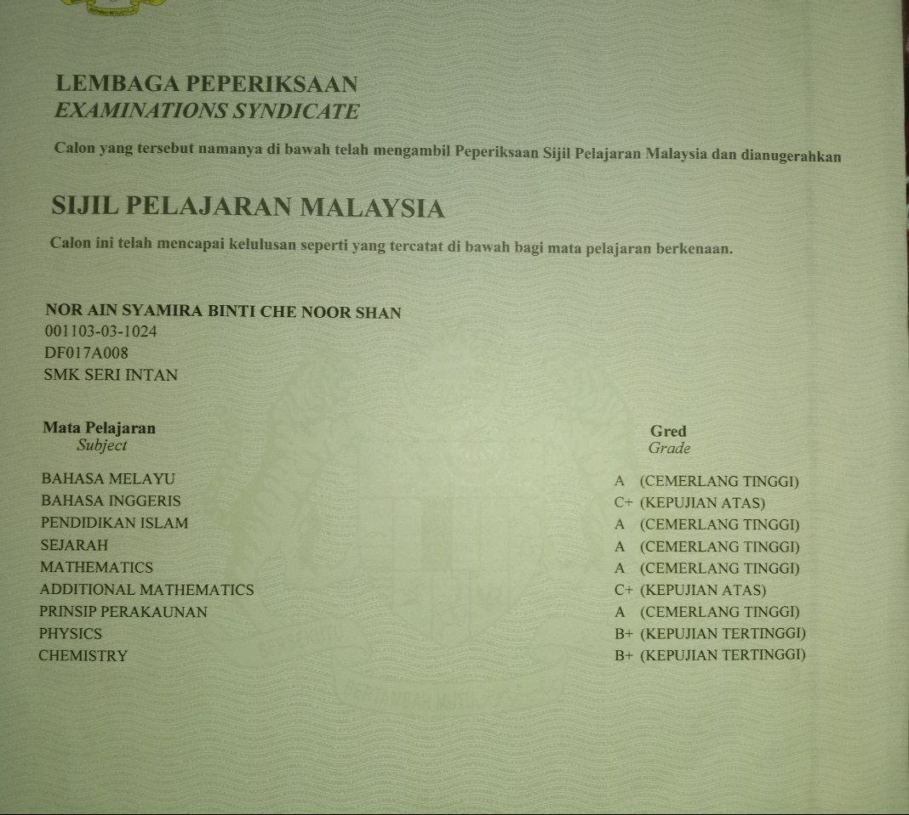
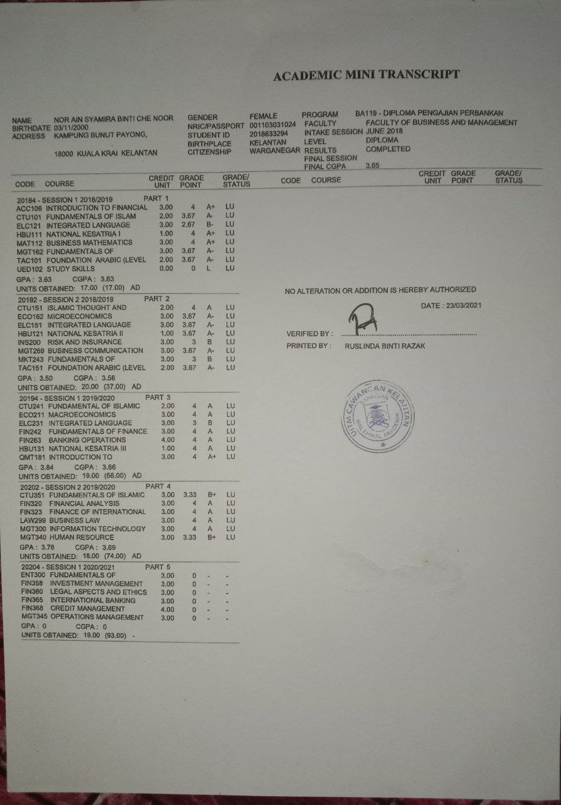
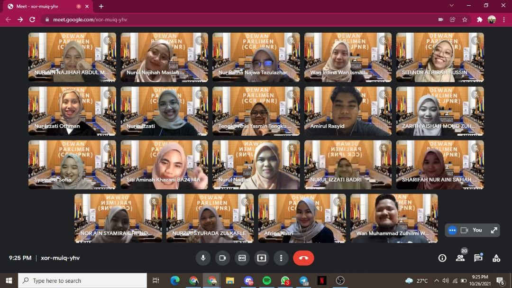

Nor Ain Syamira binti Che Noor Shan
2021156341
D2BA2424D
PORTFOLIO
Career Objective
To obtain a position that will offers me a consistently positive environment to learn new technologies and ability to give contribution in company organization to achieve its goals and targeted. I also want to obtain a position that is in line with my education background so that I can contribute what I have learn in the company organization.
Education Background
I obtained my early education since the age of 6 in 2006 at Sekolah Kebangsaan Telkong Preschool before moving to Primary 1 in the same school, Sekolah Kebangsaan Telkong until Primary 6 in 2012. I obtained Ujian Pencapaian Sekolah Rendah (UPSR) 5A’s results and continued my studies to secondary level at Sekolah Menengah Kebangsaan Seri Intan in 2013 until 2017. While in Form 3, I obtained an excellent result in Pentaksiran Tingkatan 3 (PT3) which is obtain 5A 2B 3C. Then, I moved to form 4 in science stream (accounting) and obtained a result of 5A 2B 2C in Sijil Pelajaran Malaysia (SPM) in 2017.
My passion for learning did not stop at the secondary level, in fact, I continued my studies at the university level by taking a Diploma in Business Studies (Banking) at University Technology MARA (UiTM) Kelantan, Campus Machang. I am graduated with a ‘vice chancellor’s award’ with a Cumulative Grade Point Average (CGPA) of 3.65.
After that, I continued my studies to the degree level in Bachelor of Business Administration (Hons) Finance at University Technology MARA (UiTM) Kelantan, Campus Kota Bharu and now I am in Semester 4. While at the university, I was active in the association at UiTM Kota Bharu, namely, City Campus Representative Jawatankuasa Perwakilan Non-Resident (CCR JPNR). During my experience as Secretariat of CCRJNPR, I have learnt many things on how to handle programme very well and I can hone my various skills. With 2 semesters left to complete my degree in finance, I hope to go through all the challenges and trials with perseverance and work hard to grab a degree in order to reflect a good future.
 





Award and Achievement
2021 - 2022
Received Dean's Award two semester in row in Degree of Finance
2020
Received Vice Chancellor Award in Diploma in Banking Studies
2019
Awarded in Silver in National Student Innovation Invention and Design Competition (n-siidcom) at Dewan Professional UiTM Campus Machang
2017
Awarded in Merit in Quiz of Chemical in International at SMK Seri Intan, Machang